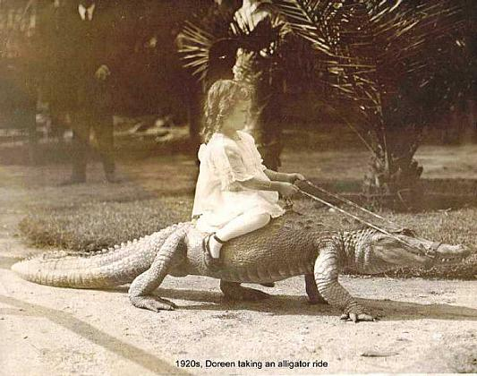

Thursday, October the 1st, 2009
back to: title, date or indexes

Outa_Spaceman rightly calls into question the caption on this photograph. “Surely this is none other than Tiny Enid?” he asks. Indeed, it is almost certainly the plucky little fascist, and one wonders why the captioneer felt the need to pretend it was a tot called Doreen. Note that the besuited chap in the background is holding the heroic infant's lit cigarillo and bakelite prize ashtray behind his back.
There have of course been innumerable attempts to rewrite the true history of Tiny Enid. Readers are advised to rely solely on the accounts given here. We know what we're talking about at Hooting Yard.